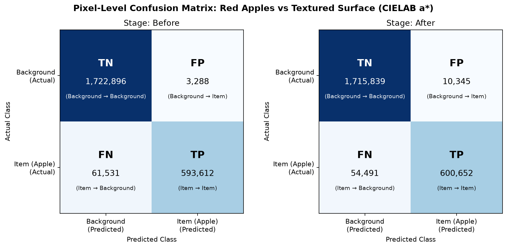
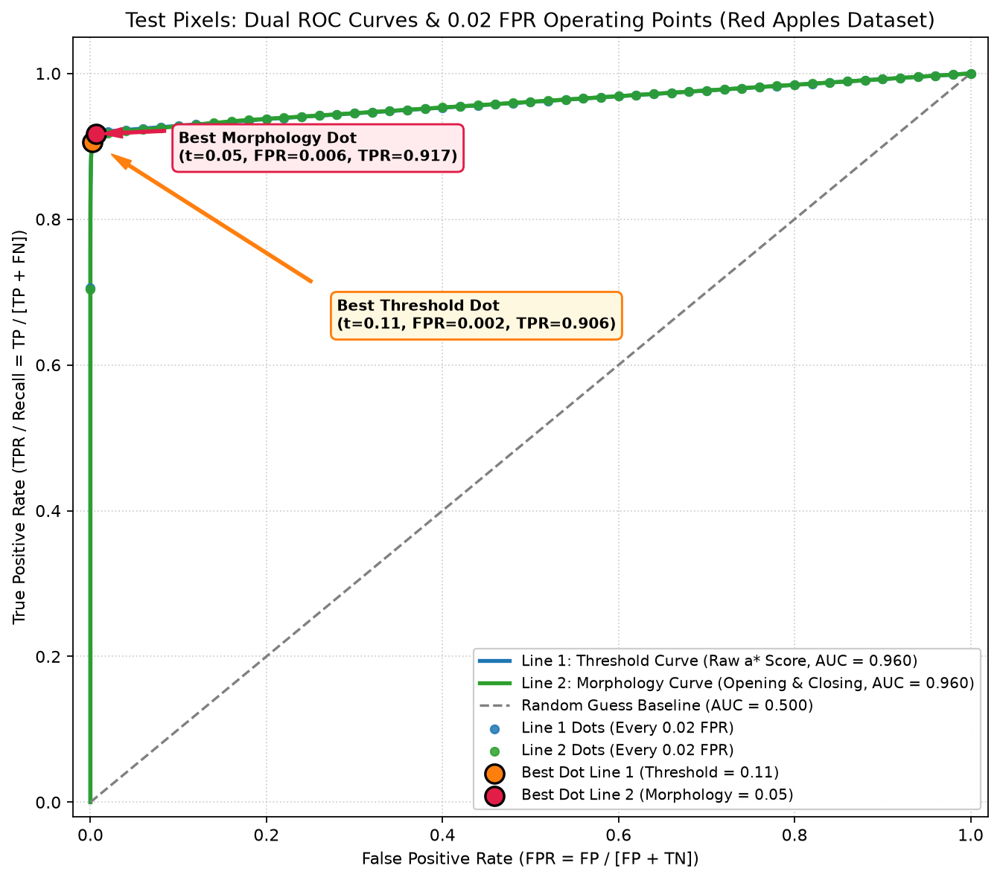
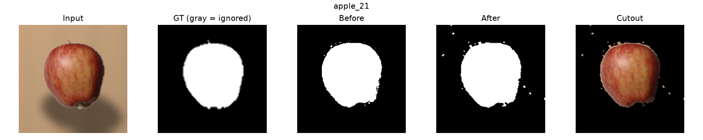

Confusion Matrix: TP, TN, FP, FN คืออะไรในภาพแอปเปิลแดงบนพื้นผิวธรรมชาติ?
พิกเซลพื้นผิว (โต๊ะไม้/หิน) ที่ไม่มีสีแดง ทายถูกว่าเป็นพื้นหลัง
พิกเซลเหล่านี้คือเนื้อไม้และเคาน์เตอร์หินอ่อนรอบผลแอปเปิล ซึ่งมีค่า a* ต่ำกว่าเกณฑ์ความแดง ระบบจึงระบาย Mask เป็นสีดำ (0) ได้อย่างถูกต้องแม่นยำ (กว่า 1.72 ล้านพิกเซล)
ROC Curve: เส้น Threshold และ Morphology แสดงเต็มเส้น (Full ROC Curves)
⭐ จุดสีส้มและสีชมพู (2 Best Operating Dots) คืออะไร?
คือ ตำแหน่งจุดการทำงานที่ดีที่สุด (Optimal Operating Points) ที่คำนวณได้จริงจากชุดทดสอบ (Test Set) ซึ่งถูกตรึงไว้บนกราฟอย่างถาวรเพื่อให้เปรียบเทียบได้ชัดเจน:
• จุดสีชมพู (Best Line 2: Morphology, t = 0.05): จุดแชมป์ของโปรเจกต์ ได้ค่า IoU = 0.9026, Dice = 0.9488, Recall = 91.68% (พิกัด FPR = 0.006, TPR = 0.917)
• จุดสีส้ม (Best Line 1: Threshold Only, t = 0.11): จุดที่ดีที่สุดก่อนทำ Morphology ได้ค่า IoU = 0.9016, Recall = 90.61% (พิกัด FPR = 0.002, TPR = 0.906)
💡 สามารถใช้ Checkbox ด้านบนเพื่อเปิด/ปิดแสดงผลจุดแต่ละจุดแยกจากกันได้อย่างอิสระ
❓ ทำไมในกราฟ ROC ถึงมี 2 เส้น (Threshold vs Morphology)?
• เส้นที่ 1 (สีน้ำเงิน - Line 1: Threshold Only): เกิดจากการกวาดค่า Threshold บนคะแนนความแดงดิบ (CIELAB a*) ก่อนทำ Morphology ได้ค่า AUC = 0.9605
• เส้นที่ 2 (สีเขียว - Line 2: Morphology Post-Processed): เกิดจากการนำผล Mask ของแต่ละ Threshold ไปผ่านกระบวนการ Morphological Opening (กำจัด Noise) และ Closing (อุดรูพรุน) แล้ววัดผล FPR และ TPR ในแต่ละระดับ Threshold จนลากเป็นเส้นโค้งที่สองได้ค่า AUC = 0.9605 เช่นกัน
📈 เส้นทั้งสองแสดงผลเต็มเส้น (Full Curves) อย่างไร?
ทั้งสองเส้นถูกแสดงผลเต็มเส้นตลอดช่วงการทำงาน (Full Range) ตั้งแต่ (0,0) ถึง (1,1) เพื่อให้เห็นพฤติกรรมความโค้งของทั้งระบบ Threshold และระบบ Morphology อย่างสมบูรณ์แบบโดยไม่ต้องใช้ Slider
🔘 ปุ่ม Checkbox ทั้ง 4 ด้านบนควบคุมอะไรบ้าง?
คุณสามารถคลิกเปิด–ปิดการแสดงผลได้แยกอิสระ 4 ส่วน:
• Line 1 (สีน้ำเงิน): แสดง/ซ่อน เส้นกราฟ ROC ก่อนทำ Morphology
• Line 2 (สีเขียว): แสดง/ซ่อน เส้นกราฟ ROC หลังทำ Morphology
• Best Dot L1 (สีส้ม): แสดง/ซ่อน จุดทำงานที่ดีที่สุดของ Line 1 (t = 0.11)
• Best Dot L2 (สีชมพู): แสดง/ซ่อน จุดทำงานที่ดีที่สุดของ Line 2 (t = 0.05)
⚖️ เส้นประสีเทา คืออะไร?
คือ เส้นเดาสุ่ม (Random Guess Baseline, AUC = 0.50) เทียบเท่ากับการเดาสุ่มเหรียญหัว-ก้อย ทั้งสองเส้นโค้งแนบชิดมุมซ้ายบนอย่างชัดเจน สะท้อนว่าอัลกอริทึมแยกแยะแอปเปิลสีแดงออกจากพื้นผิวและเงาได้อย่างแม่นยำสูงยิ่ง
การแจกแจงคะแนนกับพื้นที่ TN / FP / FN / TP
กราฟนี้สร้างจากคะแนนพิกเซลจริงของชุด Test แยกตาม Ground Truth และมีตัวควบคุมแยกจาก ROC ด้านบน สามารถปรับ Threshold ละเอียดถึง 0.001 โดยไม่ทำให้เส้น ROC ด้านบนขยับ
เส้นทั้งสองคำนวณจาก histogram ของคะแนนจริง 1,000 bins และใช้ Gaussian KDE เฉพาะการแสดงรูปเส้น ส่วนพื้นที่และ FPR/TPR คำนวณจากจำนวนพิกเซลดิบโดยตรง
ระดับความสว่าง 0–255 และการใช้แกนสี CIELAB a* (Red Only)
🎨 จำลองสเกลพิกเซล 0–255 (Grayscale Intensity)
ในคอมพิวเตอร์วิทัศน์ ค่าพิกเซล 8-bit จะมีค่าตั้งแต่ 0 ถึง 255:
🧪 ทำไมโปรเจกต์นี้ถึงใช้เฉพาะแกน a* ของ CIELAB ในการตรวจจับสีแดง?
เนื่องจากโจทย์กำหนดให้แอปเปิลเป็น สีแดงเพียงสีเดียว (Single Red Color) ระบบสี CIELAB จึงถูกนำมาใช้โดยมุ่งเน้นที่แกน a* โดยตรง:
diff_a = max(0, a_channel - bg_a)
score = diff_a / (diff_a + 20.0)
💡 ยิ่งมีเฉดสีแดงสูงกว่าพื้นหลังมาก: ค่า diff_a จะสูง ➔ score พุ่งเข้าใกล้ 1.0 ➔ เมื่อคะแนนผ่านเกณฑ์ Threshold ระบบจะระบายพิกเซลเป็น 255 (ขาว/แอปเปิล)
สูตรคำนวณตัวชี้วัด (Metrics Formulas) คำนวณอย่างไร?
(TP + TN) / (TP + TN + FP + FN)
สัดส่วนพิกเซลที่ทำนายถูกทั้งหมด ไม่ว่าจะทายถูกว่าเป็นผลแอปเปิลหรือทายถูกว่าเป็นพื้นผิวโต๊ะ
TP / (TP + FP)
ในบรรดาพิกเซลทั้งหมดที่โปรแกรมบอกว่าเป็นแอปเปิล มีเนื้อแอปเปิลอยู่จริงๆ กี่เปอร์เซ็นต์ (ก่อนทำ 99.45% / หลังทำ 98.31%)
TP / (TP + FN)
เนื้อผลแอปเปิลจริงทั้งหมดในภาพ โปรแกรมสามารถกวาดจับมาได้กี่เปอร์เซ็นต์ (ขยับเพิ่มขึ้นเป็น 91.68% หลังทำ Morphology)
TP / (TP + FP + FN)
พื้นที่ทับซ้อนจริง หารด้วยพื้นที่รวมทั้งหมดของแอปเปิลจริงและส่วนที่ทำนาย (ทะลุ 0.9026 หลังทำ Morphology)
2TP / (2TP + FP + FN)
ค่าเฉลี่ยฮาร์โมนิกระหว่าง Precision และ Recall ให้ความสำคัญกับความสมบูรณ์ของรูปทรงวัตถุ (ได้สูงถึง 0.9488)
กราฟและภาพผลลัพธ์จริงจากการรันไพพ์ไลน์ (Real Outputs)
📊 Confusion Matrix (ระบุ TP, TN, FP, FN ชัดเจน)

แสดงจำนวนพิกเซลจริงทั้ง 4 ช่อง (Before: TN 1.72M, FP 3,288, FN 61,531, TP 593,612; After: TN 1.71M, FP 10,345, FN 54,491, TP 600,652 กู้คืนเนื้อแอปเปิลเพิ่ม 7,040 พิกเซล)
📈 Dual ROC Curves & 2 Best Dots & 0.02 FPR Sampling (AUC = 0.9605)

กราฟ ROC แสดง 2 เส้น (Line 1: Threshold สีน้ำเงิน AUC=0.9605, Line 2: Morphology สีเขียว AUC=0.9605) พร้อม 2 Best Dots และจุดตัวอย่างทุกๆ 0.02 FPR รวม 51 จุดต่อเส้น
🍎 ภาพตัวอย่างการตัดแบ่งภาพจริง (apple_21 บนไม้โอ๊ก)

ภาพตัวอย่างแอปเปิลแดงบนโต๊ะไม้โอ๊กพร้อมเงาทอด: Input ➔ Ground Truth Trimap ➔ Before Mask ➔ After Morphology Mask ➔ Cutout